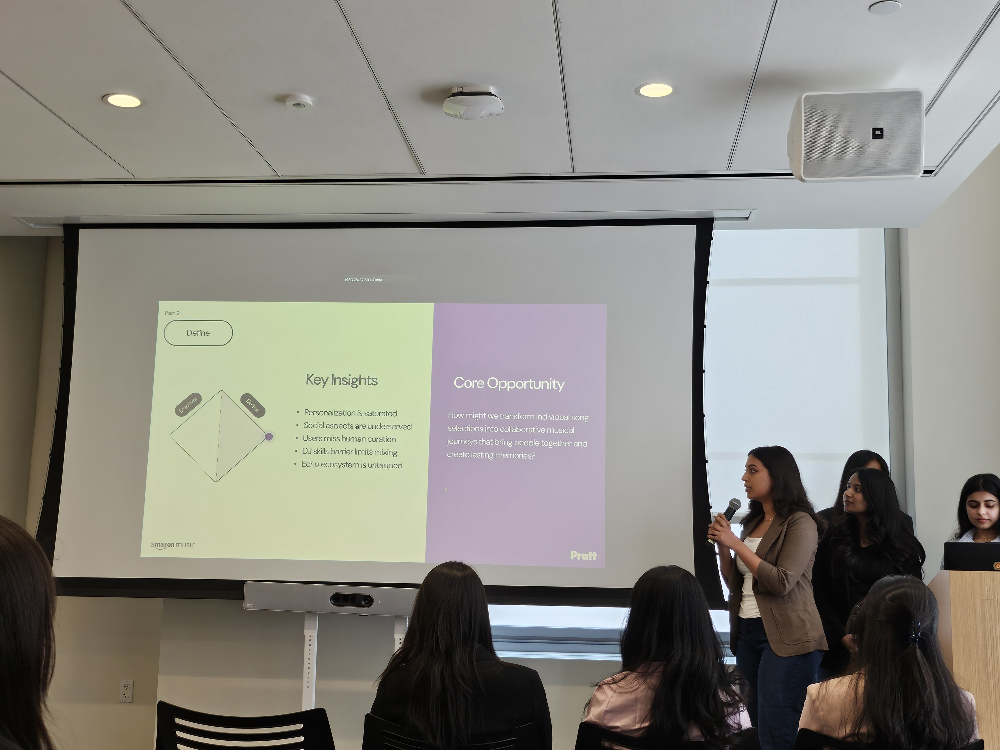

Reimagining social music through collaborative mixing
How do we bring back the social joy of music in an era of algorithmic isolation?
As a team of 4, we set out to reimagine how people experience music together. Our goal was to create shared experiences that foster connection and discovery among friends.
Streaming platforms have been optimized for personalization, but lost their social soul.
Spotify, Apple Music, and YouTube Music excel at understanding individual taste. But music has always been fundamentally social (e.g., mixtapes, radio dedications, or passing the aux cord at parties).

Today's platforms create preference bubbles that isolate listeners. The shared discovery and collective joy of music is being engineered out of the experience.
"Music streaming has become efficient but lost its social soul"
Social context as the new differentiator.
While algorithms get better at predicting what you'll like, they can't replicate the magic of a friend introducing you to a song that becomes "our song." This creates an opportunity for Amazon Music:
Shared Experiences
Transform individual listening into collaborative moments that create memories
Organic Discovery
Let friends introduce each other to music, the way it's always worked best
Ecosystem Lock-in
Create social features that keep friend groups within Amazon Music
BeatDrop: Where friends become DJs together.
BeatDrop is a new collaborative mixing feature that transforms any gathering into a shared musical experience. Everyone contributes tracks, and AI seamlessly blends them into a cohesive mix.

The Magic Moment
Imagine arriving at a party where a song triggers nostalgia. You scan a QR code, add your track, and within moments the AI mixes it seamlessly into the flow. Everyone lights up with recognition and connection. This collective joy is the heart of BeatDrop.
View Prototype →
Three ways to drop the beat.

1. Host starts the mix
Create a BeatDrop mix and share a QR code with your guests. As the host, you have full control over the vibe. You can add your own songs to kick things off and select a mood like "Hype" or "Chill" to set the energy. You can also adjust mixing settings or use AI to customize how songs blend together.


2. Guests join and contribute
Guests scan the code to join instantly, no app download is required for guests. Guests can add their own tracks to the mix or like/dislike existing ones, enhancing the collaborative experience.

3. AI mixes in real-time
Our AI DJ analyzes tempo, key, and energy to seamlessly blend contributions. No awkward transitions just smooth mixing that keeps the party going.
Understanding why music brings people together.
We conducted desk research and Voice of Customer interviews to understand the current landscape. None of the major platforms effectively capture the magic of creating music experiences together.
Our interviews revealed:
Our Users
We identified four key user archetypes that represent the different ways people engage with music at social gatherings.

What we heard from users
"If I was hosting a party I would absolutely quickly create and share this to offload the responsibility." — Party Host, 28
"I would save the playlist from my friend's party. Those songs would mean something special to our group." — Casual Listener, 24
"Usually one person controls the aux cord and everyone else just has to deal with it. This actually lets everyone have a voice." — Music Enthusiast, 31
From concept to validated solution.
We tested our prototype to validate BeatDrop's collaborative mixing concept. Our prototypes tested different interaction flows for how users discover, add, and control music.
Vibe Controls & AI Mixing
We designed intuitive controls that let users shape the party vibe without requiring DJ skills. The AI handles the technical complexity while users focus on the fun part.
BeatDrop extends into the physical space.
We designed BeatDrop to integrate with Amazon's broader ecosystem, creating immersive experiences that go beyond just sound.

Memory & Retention
BeatDrop isn't just for the party, it's for the memories after. Users can save mixes, relive moments, and even get nostalgic notifications years later.


A new acquisition model built on authentic moments.
BeatDrop grows through genuine social experiences. Every BeatDrop mix becomes an organic discovery opportunity as guests discover songs and create collaborative playlists.

Bringing BeatDrop to Amazon Music.
My team and I pitched BeatDrop directly to the Amazon Music team at their Manhattan office. We walked through the research, the social acquisition model, and a live demo of the prototype.

Presenting BeatDrop to the Amazon Music team in Manhattan, NY.
The team responded most strongly to the idea of growth through genuine social moments rather than paid acquisition. They also appreciated the decision to keep AI mixing invisible, and optional. The QR-based host/guest flow drew the most discussion, sparking questions about how BeatDrop could extend to live events and existing Amazon Music social features.
The biggest takeaway from the pitch: framing BeatDrop as an acquisition engine built on shared experiences was what made it resonate with a team that thinks in terms of reach and retention.
What I learned
Social context creates stronger bonds than personalization alone.
Algorithms can predict what you'll like, but they can't replicate the meaning that comes from a friend sharing a song with you. The most memorable music moments are social ones and that's what BeatDrop captures.
AI should reduce friction, not replace creativity.
The AI mixing isn't the star, the co-creators are. BeatDrop uses AI to handle the technical complexity of transitions so everyone could focus on the fun part: sharing music they love.
Design for group experiences, not just individual users.
Most UX focuses on single-user flows. BeatDrop required thinking about multi-user interactions, social hierarchies (host vs. guest), and collective decision-making. It's a fundamentally different design challenge.
Where BeatDrop could go next.
Twitch Integration
Optional visual components like live DJ cams or crowd reactions for virtual parties.
Physical Merchandise
BeatDrop records or vinyls of personal mixes, branded party kits with themed decorations.
Memory Features
Save and revisit past BeatDrop sessions, with photos and memories attached to the playlist.